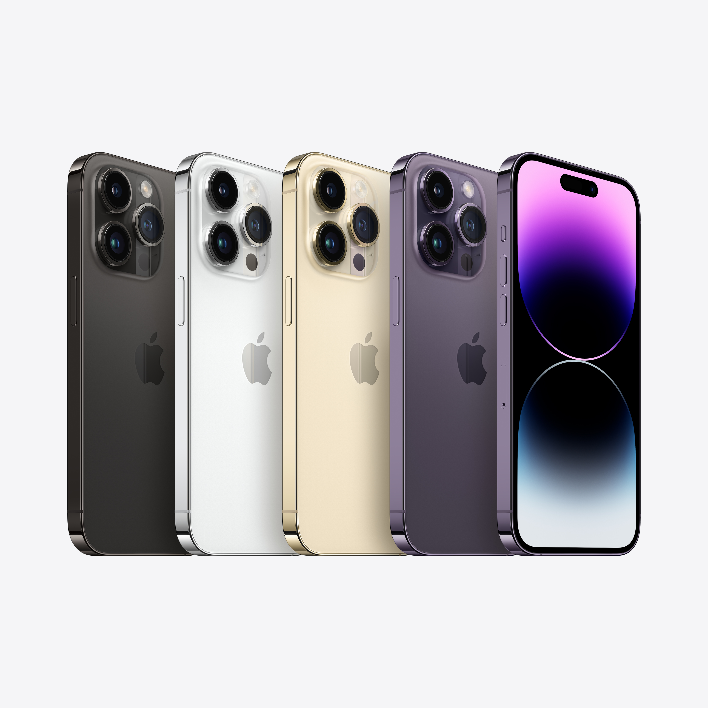

Introduction
Welcome to the sector of modern-day generation and mesmerizing aesthetics, wherein Apple's brand new flagship, the iPhone 14 Pro Max, has taken the telephone marketplace by storm. Beyond its effective overall performance and modern features, the iPhone 14 Pro Max offers an exceptional variety of colors that captivate the senses and mirror your specific fashion. In this weblog publish, we can delve into the captivating array of shade choices available, permitting you to make an informed decision while deciding on the correct hue that enhances your persona and lifestyle.
The Classic Elegance of Silver
Starting with the undying and complex option, the Silver variant of the iPhone 14 Pro Max exudes a sense of understated luxury. Its glossy metal finish provides a hint of elegance, making it a famous desire among discerning customers who appreciate simplicity with a touch of refinement. Whether you are a expert searching for a device that fits your formal apparel or a minimalist at heart, the Silver iPhone 14 Pro Max is certain to resonate together with your sense of style.
Radiant and Bold: Introducing Gold
For individuals who dare to stand out from the gang, the Gold iPhone 14 Pro Max is the closing expression of opulence and status. Its lustrous and radiant floor catches the mild in a manner it really is sincerely awe-inspiring. Embrace your formidable facet and make a declaration with this lovely coloration desire, showcasing your unwavering self assurance and exceptional flavor.
 Immerse yourself in the spell binding worldwide of the iPhone 14 Pro Max, wherein beauty meets innovation thru a captivating spectrum of colors. This picture showcases the stunning array of color alternatives to be hadTimeless Black: Sleek and Versatile
Black has always been synonymous with beauty and flexibility, and the iPhone 14 Pro Max in Black is not any exception. The glossy, darkish end now not most effective exudes a experience of strength and sophistication but additionally complements definitely any outfit or surroundings. Whether you are a innovative expert, a business government, or a style-forward person, the Black iPhone 14 Pro Max effortlessly adapts for your life-style.
Distinguished Graphite: A Blend of Modernity and Depth
For those seeking a cultured and contemporary color option, the Graphite iPhone 14 Pro Max presents an exciting desire. Its mixture of gray tones with a hint of intensity lends an air of class and distinction to the tool. Whether you are attending a formal event or virtually going approximately your day, the Graphite variant will go away a long-lasting impression with its particular and understated allure.
The Playful Charm of Blue
Looking to infuse some amusing and vibrancy into your telephone? The Blue iPhone 14 Pro Max is the right pick out for you. This energetic and energetic hue embodies a youthful spirit and adds a pop of color to your ordinary existence. Express your creativity and embrace a feel of adventure with the Blue iPhone 14 Pro Max as your depended on associate. The Technology Behind the Vibrant Colors
The Technology Behind the Vibrant Colors
Beyond their visual enchantment, the colors of the iPhone 14 Pro Max are a end result of advanced technological approaches and precision engineering. Apple's dedication to delivering a continuing consumer experience extends to the layout and manufacturing of every device. The shades are done thru a meticulous combination of specialized coatings, materials, and manufacturing techniques.
To create the radiant Gold variation, as an example, a completely unique vapor deposition technique is hired, wherein gold particles are infused into the device's stainless steel frame. This complex technique no longer only enhances the color but additionally adds a further layer of sturdiness to the device, making it proof against put on and scratches.
Similarly, the lustrous Silver variant is done via an anodizing and sprucing process, remodeling the surface of the aluminum frame into an elegant silver hue. This technique no longer simplest ensures a stunning finish however additionally contributes to the general structural integrity of the device.
Apple's relentless pursuit of perfection is evident inside the Graphite variant as nicely. Achieving this charming color entails an modern combination of matte texture and a deep, darkish hue, making it visually putting and wonderful.
Choosing Your Ideal iPhone 14 Pro Max Color
Selecting the suitable shade in your iPhone 14 Pro Max is a personal decision that reflects your fashion, persona, and individual possibilities. Here are some factors to don't forget while making your desire
Expression of Style
Are you drawn to conventional and complex aesthetics, or do you pick ambitious and colourful expressions of coloration? Let your iPhone 14 Pro Max be an extension of your particular style.
Profession and Environment
Consider how your cellphone's colour complements your expert surroundings or life-style. If you attend formal meetings often, a subtle and stylish coloration like Silver or Graphite can be extra appropriate.
Durability and Maintenance
Some colors might also show wear and scratches extra visibly than others. Keep in thoughts that darker shades, like Graphite and Black, have a tendency to be more forgiving in this regard.
Matching Accessories
Consider any add-ons you would possibly pair together with your iPhone 14 Pro Max. Some users experience coordinating their telephone cases or accessories with the device's colour.
Emotional Connection
Colors can evoke feelings and emotions. Choose a coloration that resonates with you on a deeper stage and brings pleasure on every occasion you choose up your smartphone.
Ultimately, with the iPhone 14 Pro Max, you can't move wrong with any color preference. Each variation is a testament to Apple's dedication to excellence in design and engineering. Whichever coloration you choose, you may relaxation assured that your device can be a seamless fusion of aesthetics and era.
Conclusion
The iPhone 14 Pro Max colorations provide a captivating array of selections that go beyond the floor, every reflecting a blend of artistry and technology. From the classic beauty of Silver to the vibrant charm of Blue, and the undying versatility of Black to the contemporary depth of Graphite, every color is a celebration of individuality.
As you embark to your adventure with the iPhone 14 Pro Max, don't forget the message you need your smartphone to convey. Whether you are looking for sophistication, boldness, or playfulness, the shade of your iPhone 14 Pro Max could be a visible representation of your style and identity.
So, go ahead and pick out the iPhone 14 Pro Max coloration that speaks to you the maximum. Embrace the beauty, power, and innovation that Apple has crafted into this flagship tool. Let your iPhone 14 Pro Max come to be a mirrored image of your character and an integral companion for your daily adventures.